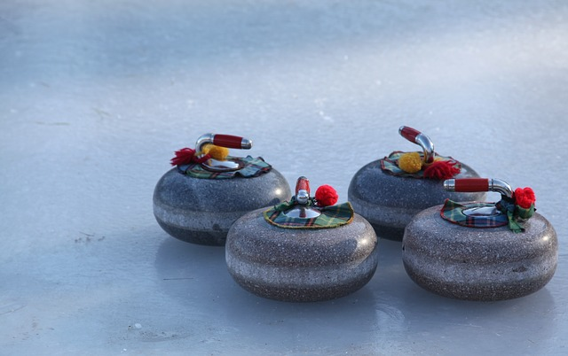

In curling, the ice is sprayed with water in order to form droplets that freeze on the surface creating a bumpy texture knows as the pebble. When a shot is thrown the sweepers on the shooter's team can press down firmly on their brooms to melt the bumps slightly. This creates a thin layer of water under the stone which helps it slide further as well as curl less.
Click HERE to return to the main page.